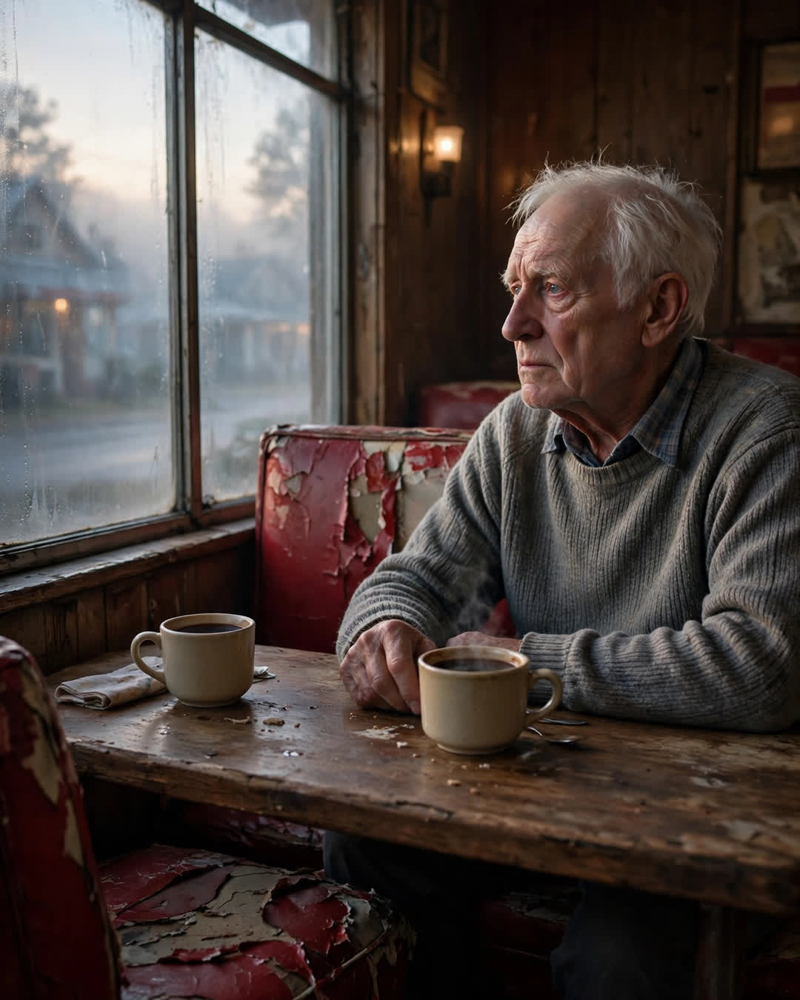

The Diner Seat
A Clipp Kaili original story

For nineteen years, my father and I had breakfast in the same booth at the same diner, and in nineteen years we never once sat anywhere else.
Faye's Diner, Route 9, the booth by the window with the torn red vinyl on my side. Every Saturday, seven o'clock, whether I was nine or nineteen or home from college with a hangover I was hiding badly. Dad ordered coffee and the special. I ordered coffee and whatever had the most syrup on the menu. We talked about the truck, the weather, the neighbors, nothing — the kind of nothing that turns out, later, to be everything.
Then I took a job across the country. It was the right move. Everyone said so, including him, loudest of all, which is how I knew what it cost him.
The Saturdays went on without me. I know because Mom told me — quietly, the way you report on weather in a country you're worried about. Every Saturday at seven, Dad drove to Faye's. Sat in our booth. And ordered two coffees.
"One'll do, hon," the waitress, Della, told him, the second week.
"Two," Dad said. "He likes it waiting when he comes in."
He wasn't confused. That is the thing I need people to understand. He could name the president, my zip code, and the score of every game that season. He ordered the second coffee the way other men keep a light on or a chair empty — not because he believed I was there, but because the booth felt like a lie with only one cup in it. For two years: two coffees, one drunk black, one going cold across the table, tipped for double, never explained to anyone twice.
I found out in October. I didn't tell him I was coming at Christmas. Some things you have to do in person to do right.
At seven on the Saturday before the holiday, I was standing outside Faye's in the dark, watching through the window. Our booth. My father with his newspaper. Della setting down two coffees out of pure habit — and mine, in my spot, on my torn side of the vinyl.
I walked in. The bell over the door. He looked up.
I will go to my grave remembering that he did not look surprised. Delighted, yes — a man's whole face rearranged by it. But not surprised. As if some deep accounting in him had simply kept the seat warm and the coffee coming, against all logic, on the chance that faith like that gets answered.
"You're late," he said. "Coffee's cold."
"I'll manage," I said, and slid in across from him, and Della — who had seen it all — just refilled us both and walked away wiping her eyes like the coffee steam had gotten her.
Two coffees, every Saturday, for two years. One man drinking for two, in a booth that seat-believed.
Some people wait at windows.
My father waited with coffee, and kept my seat the way you keep a promise — ready, and warm, and right on time.
← Back to all stories